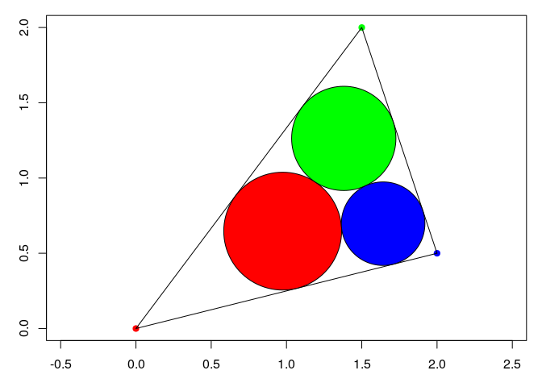

Malfatti circles
The Malfatti cirlces of a triangle can be constructed using straightedge and compass.
Here we provide the analytical formulae of the Malfatti circles of a triangle \(ABC\).
Let \(I\) be the incircle of \(ABC\) and \(r\) its inradius. Let \(a = BC\), \(b = AC\) and \(c = AB\) be the edge lengths of \(ABC\), and \(s = \frac{1}{2}(a+b+c)\) be the semiperimeter. The radii of the Malfatti circles are given by \[ r_1 = \frac{r\bigl(s - r - (IB+IC-IA)\bigr)}{2(s-a)}, \] \[ r_2 = \frac{r\bigl(s - r - (IC+IA-IB)\bigr)}{2(s-b)}, \] \[ r_3 = \frac{r\bigl(s - r - (IA+IB-IC)\bigr)}{2(s-c)}. \] Now, the centers. Set \[ d_1 = \frac{r_1}{\tan\left(\dfrac{\arccos\left(\dfrac{(C-A).(B-A)}{bc}\right)}{2}\right)}, \] \[ d_2 = \frac{r_2}{\tan\left(\dfrac{\arccos\left(\dfrac{(C-B).(A-B)}{ac}\right)}{2}\right)}, \] \[ d_3 = \frac{r_3}{\tan\left(\dfrac{\arccos\left(\dfrac{(A-C).(B-A)}{ba}\right)}{2}\right)}, \] \[ w = d_1 + d_2 + \sqrt{r_1r_2}, \] \[ u = d_2 + d_3 + \sqrt{r_2r_3}, \] \[ v = d_3 + d_1 + \sqrt{r_3r_1}, \] \[ d = \frac{\sqrt{(-u+v+w)(u+v-w)(u-v+w)(u+v+w)}}{2}. \] Then the trilinear coordinates \(x:y:z\) of the center \(O_1\) are \[ x = \frac{d}{r_1} - (v+w), \quad y = u, \quad z = u. \] For \(O_2\), \[ x = v, \quad y = \frac{d}{r_2} - (u+w), \quad z = v. \] And for \(O_3\), \[ x = w, \quad y = w, \quad z = \frac{d}{r_3} - (u+v). \]
Here is a R code returning the Malfatti circles:
MalfattiCircles <- function(A, B, C){
a <- sqrt(c(crossprod(B-C))) # distance BC
b <- sqrt(c(crossprod(A-C))) # distance AC
c <- sqrt(c(crossprod(B-A))) # distance AB
p <- (a + b + c); s <- p / 2;
areaABC <- sqrt(s*(s-a)*(s-b)*(s-c))
I <- (A*a + B*b + C*c) / p # incenter
r <- areaABC / s # inradius
# radii of Malfatti circles ####
IA <- sqrt(c(crossprod(I-A)))
IB <- sqrt(c(crossprod(I-B)))
IC <- sqrt(c(crossprod(I-C)))
r1 <- r * (s-r-(IB+IC-IA)) / 2 / (s-a)
r2 <- r * (s-r-(IC+IA-IB)) / 2 / (s-b)
r3 <- r * (s-r-(IA+IB-IC)) / 2 / (s-c)
# centers of Malfatti circles ####
d1 <- r1 / tan(acos(c(crossprod(C-A,B-A)/b/c))/2)
d2 <- r2 / tan(acos(c(crossprod(C-B,A-B)/a/c))/2)
d3 <- r3 / tan(acos(c(crossprod(A-C,B-C)/b/a))/2)
w <- d1 + d2 + 2*sqrt(r1*r2)
u <- d2 + d3 + 2*sqrt(r2*r3)
v <- d3 + d1 + 2*sqrt(r3*r1)
d <- sqrt((-u+v+w)*(u+v-w)*(u-v+w)*(u+v+w))/2
x <- d/r1 - (v+w); y <- u; z <- u # trilinear coordinates
O1 <- (u*x*A + v*y*B + w*z*C) / (u*x + v*y + w*z)
x <- v; y <- d/r2 - (u+w); z <- v # trilinear coordinates
O2 <- (u*x*A + v*y*B + w*z*C) / (u*x + v*y + w*z)
x <- w; y <- w; z <- d/r3 - (u+v) # trilinear coordinates
O3 <- (u*x*A + v*y*B + w*z*C) / (u*x + v*y + w*z)
return(list(
C1 = list(center = O1, radius = r1),
C2 = list(center = O2, radius = r2),
C3 = list(center = O3, radius = r3)
))
}Try it:
A <- c(0, 0)
B <- c(1.5, 2)
C <- c(2, 0.5)
Mcircles <- MalfattiCircles(A, B, C)
C1 <- Mcircles[[1]]; C2 <- Mcircles[[2]]; C3 <- Mcircles[[3]]
O1 <- C1$center; O2 <- C2$center; O3 <- C3$center
r1 <- C1$radius; r2 <- C2$radius; r3 <- C3$radius
library(plotrix)
par(mar=c(3, 3, 1, 1))
plot(0 , 0, type = "n", xlim = c(0,2), ylim = c(0,2), asp = 1,
xlab = NA, ylab = NA)
points(rbind(A,B,C), pch = 19, col = c("red", "green", "blue"))
lines(rbind(A,B,C,A)) # draw triangle ABC
draw.circle(O1[1], O1[2], r1, col = "red")
draw.circle(O2[1], O2[2], r2, col = "green")
draw.circle(O3[1], O3[2], r3, col = "blue")